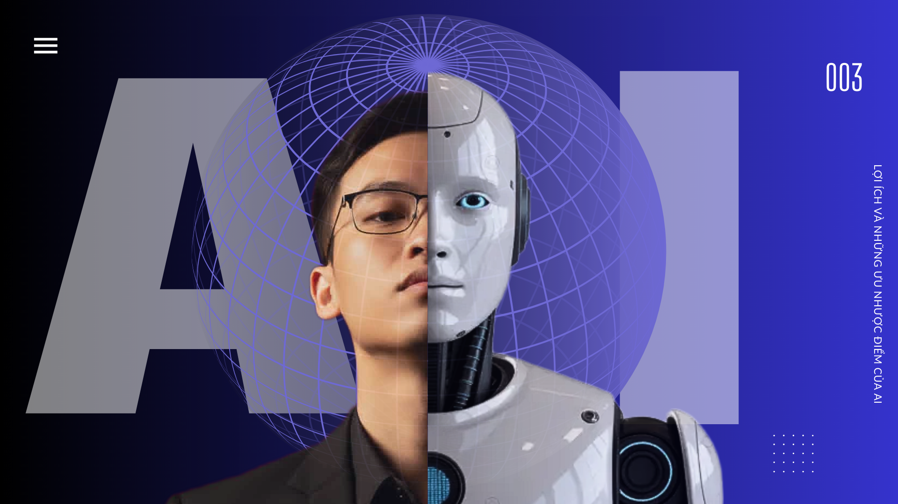

📌 Giới thiệu
Trí tuệ nhân tạo (AI) đang thay đổi cách con người học tập. AI giúp cá nhân hóa bài học, hỗ trợ làm bài tập, giải thích kiến thức và tạo môi trường học tập thông minh hơn.Đây là trang thuyết trình mô phỏng ý tưởng về việc ứng dụng AI trong giáo dục. Giới thiệu về thành viên: bấm vào đây |
 |
✨ Ứng dụng AI trong học tập
Ghi chú: AI hầu như có thể giải thích cho bạn rất nhiều thứ nhưng nó vẫn còn một số giới hạn của nó.
Một số lưu ý khi sử dụng AI:
- Xác minh thông tin:AI có thể sai (Hallucination), luôn kiểm tra lại dữ liệu quan trọng.
- Bảo mật dữ liệu:Tuyệt đối không nhập thông tin cá nhân, bí mật công ty, hoặc tài chính.
- Chất lượng đầu vào:Hỏi rõ ràng, cụ thể (prompt tốt) để có kết quả tốt.
- AI là công cụ:Dùng AI để tăng cường năng suất, không phải để thay thế hoàn toàn sự suy luận và quyết định của con người.
- Hiểu giới hạn:AI thiếu cảm xúc và bối cảnh con người, và chỉ biết những gì đã được huấn luyện.
💡 Ví dụ AI hỗ trợ học tập:
Q1: Định nghĩa đạo hàm của hàm số là gì?
Đáp án: Đạo hàm f'(x) là giới hạn của tỉ số tăng khi Δx→0: f'(x)=lim_{Δx→0}(f(x+Δx)-f(x))/Δx.
Q2: Past simple vs Present perfect — khi nào dùng?
Đáp án: Past simple dùng cho hành động đã xảy ra và kết thúc ở quá khứ; Present perfect dùng cho hành động có liên hệ tới hiện tại hoặc chưa chỉ rõ thời điểm.
Q3: Công thức tính diện tích hình tròn?
Đáp án: S = πr².
🧠Một số lợi ích và tác hại của AI:
1) Lợi ích khi sử dụng AI:
- Học nhanh hơn và hiệu quả hơn
- Cá nhân hoá nội dung theo từng học sinh
- Giảm áp lực và thời gian tự tìm tài liệu
- Tăng khả năng tự học
- Trợ lý luôn sẵn sàng 24/7
2) Tác hại khi sử dụng AI:
Thiếu tính linh hoạt do phụ thuộc vào trí tuệ nhân tạo: Vì con người chúng ta nếu phụ thuộc quá mức vào những máy móc hiện đại, con người sẽ mất dần đi khả năng tự học hỏi, phân tích, sáng tạo, từ đó sẽ trở nên kém linh hoạt hơn trong việc xử lý các tình huống thực tế.
- Tăng tỷ lệ thất nghiệp trên toàn cầu: Vì gần đây ta có thể thấy được nhiều vị trí lao động phổ thông đã bị thay thế bằng máy móc tự động. Vấn đề này về lâu dài có thể dẫn tới sự gia tăng đói nghèo và các tệ nạn xã hội.
- Nguy cơ bị tấn công trên mạng: Theo các dự đoán gần đây trí tuệ nhân tạo có nguy cơ ảnh hưởng đến các vấn đề an ninh trên quy mô quốc gia. Bởi AI có thể bị lợi dụng để tấn công trên mạng xã hội, thậm chí là cho mục đích quân sự.
- Vi phạm quyền riêng tư: Bởi khi sử dụng AI để thu thập thông tin cá nhân và số hóa thành dữ liệu thì AI có thể vi phạm quyền riêng tư của con người. Nếu bị dùng với mục đích xấu, các doanh nghiệp có thể thực hiện các hoạt động truyền thống thất thiệt sai lệch thông tin, gây ảnh hưởng tới ổn định chính trị và tình hình xã hội.
- Làm mờ ranh giới giữa thật và giả trong nhận thức: Việc tạo nội dung bằng AI ( hình ảnh, giọng nói, video,…) khiến con người ngày càng khó phân biệt thông tin thật – giả. Ảnh hưởng nghiêm trọng đến nhận thức xã hội, niềm tin công chúng và an ninh thông tin.
Ghi chú: một số thông tin được tham thảo từ nhiều nguồn.
📚 Tài nguyên học tập & mẫu đề
| Loại | Mô tả | Link tham khảo |
|---|---|---|
| Bài giảng | Toán: Đại số, Giải tích cơ bản (mô tả ngắn) | Wikipedia (vi) |
| Video | Chuỗi video giải thích khái niệm bằng trực quan | YouTube |
| Sách | List sách tham khảo cơ bản (PDF hoặc in) | Giải tích 1 |
🔎 Mẹo học nhanh
- Học theo kỹ thuật Pomodoro: 25 phút học + 5 phút nghỉ (lặp 4 lần, nghỉ dài).
- Làm flashcards và ôn lặp lại (spaced repetition).
- Ghi chép bằng lời của bạn — tự giải thích (Feynman technique).
- Sử dụng AI để tạo câu hỏi và kiểm tra kiến thức.
📊 Quick Tools
|
Trạng thái hôm nay Buổi đã hoàn thành: Đã học: 7/10 buổi |
Level test (mẫu)
|
|
Ý kiến của bạn |
📝 Lịch kiểm tra mẫu
- 23/12/2025 — Kiểm tra Toán (45 phút)
- 29/12/2025 — Kiểm tra Tiếng Anh (nghe & đọc)
🔗 Nhanh